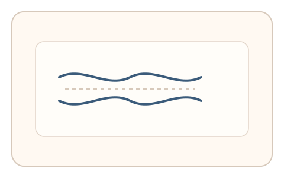
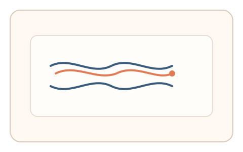
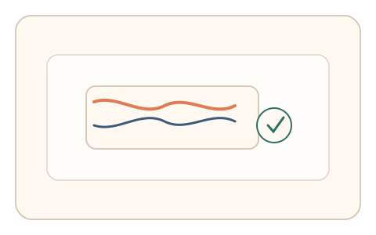

#79
视觉思考范式：文字与符号
已扩展
词形轮廓补全
仅展示词形上下轮廓，引导用户补全或选择匹配词形，以描绘路径与弯折位置验证真实性。
概念原文
仅显示词的上下轮廓线，用户选择最符合的词或描出轮廓补全路径；记录描绘速度与弯折位置。
依赖人类对“词形轮廓”的整体感知，而非逐字识别。
研究背景
人类阅读不仅依赖逐字识别，还会利用词形轮廓进行整体感知。对轮廓的补全路径与弯折点具有可测的速度与停顿模式，可用于区分脚本与真实用户。
核心机制
- 展示词形上下轮廓线或缺口轮廓。
- 用户选择匹配词或沿轮廓描绘补全。
- 记录描绘速度、弯折位置与停顿。
- 多轮随机词形与字体保持稳定分布。
用户流程
- 步骤 1：用户看到词形轮廓提示。
- 步骤 2：用户补全轮廓或选择匹配词。
- 步骤 3：系统记录路径与节奏并判定。
判定信号
描绘速度与弯折点分布
人类补全轮廓会在关键拐点处放慢并微调。
轮廓匹配误差
真实用户的补全路径具有稳定的误差范围。
判定逻辑
补全路径需落在人类误差区间且包含自然的停顿节奏；过度平滑或直线化判异常。
对抗面
- 脚本提取轮廓并自动描绘
- 重放真实用户的描绘轨迹
防御与缓解
- 随机化词形、字体与轮廓缺口
- 加入轻微噪声降低轮廓拟合
- 叠加描绘时序与压力节奏进行多信号判定
可达性与风险
提供更大字号与高对比模式，并允许选择题替代描绘任务。
- 语言与词形熟悉度差异影响表现
- 描绘任务对手部障碍用户不友好
可视化状态

状态 1：轮廓提示
仅显示词形轮廓线。

状态 2：补全描绘
用户沿轮廓补全路径。

状态 3：误差判定
根据路径误差与节奏判定。
参考资料
Bouma shape
说明词形轮廓在阅读中的作用。
Visual word recognition
说明整体词形感知的研究背景。